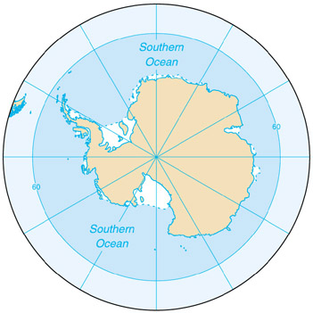

|
Southern Ocean | |
| Introduction Geography Economy Transportation Transnational Issues | ||
|  | ||
| Southern Ocean | Introduction | Top of Page |
| Background: | A decision by the International Hydrographic Organization in the spring of 2000 delimited a fifth world ocean - the Southern Ocean - from the southern portions of the Atlantic Ocean, Indian Ocean, and Pacific Ocean. The Southern Ocean extends from the coast of Antarctica north to 60 degrees south latitude which coincides with the Antarctic Treaty Limit. The Southern Ocean is now the fourth largest of the world's five oceans (after the Pacific Ocean, Atlantic Ocean, and Indian Ocean, but larger than the Arctic Ocean). |
| Southern Ocean | Geography | Top of Page |
| Location: | body of water between 60 degrees south latitude and Antarctica |
| Geographic coordinates: | 65 00 S, 0 00 E (nominally), but the Southern Ocean has the unique distinction of being a large circumpolar body of water totally encircling the continent of Antarctica; this ring of water lies between 60 degrees south latitude and the coast of Antarctica, and encompasses 360 degrees of longitude |
| Map references: | Antarctic Region |
| Area: |
total:
20.327 million sq km
note: includes Amundsen Sea, Bellingshausen Sea, part of the Drake Passage, Ross Sea, a small part of the Scotia Sea, Weddell Sea, and other tributary water bodies |
| Area - comparative: | slightly more than twice the size of the US |
| Coastline: | 17,968 km |
| Climate: | sea temperatures vary from about 10 degrees Celsius to -2 degrees Celsius; cyclonic storms travel eastward around the continent and frequently are intense because of the temperature contrast between ice and open ocean; the ocean area from about latitude 40 south to the Antarctic Circle has the strongest average winds found anywhere on Earth; in winter the ocean freezes outward to 65 degrees south latitude in the Pacific sector and 55 degrees south latitude in the Atlantic sector, lowering surface temperatures well below 0 degrees Celsius; at some coastal points intense persistent drainage winds from the interior keep the shoreline ice-free throughout the winter |
| Terrain: | the Southern Ocean is deep, 4,000 to 5,000 meters over most of its extent with only limited areas of shallow water; the Antarctic continental shelf is generally narrow and unusually deep - its edge lying at depths of 400 to 800 meters (the global mean is 133 meters); the Antarctic icepack grows from an average minimum of 2.6 million square kilometers in March to about 18.8 million square kilometers in September, better than a sixfold increase in area; the Antarctic Circumpolar Current (21,000 km in length) moves perpetually eastward; it is the world's largest ocean current, transporting 130 million cubic meters of water per second - 100 times the flow of all the world's rivers |
| Elevation extremes: |
lowest point:
-7,235 m at the southern end of the South Sandwich Trench
highest point: sea level 0 m |
| Natural resources: | probable large and possible giant oil and gas fields on the continental margin, manganese nodules, possible placer deposits, sand and gravel, fresh water as icebergs, squid, whales, and seals - none exploited; krill, fishes |
| Natural hazards: | huge icebergs with drafts up to several hundred meters; smaller bergs and iceberg fragments; sea ice (generally 0.5 to 1 meter thick) with sometimes dynamic short-term variations and with large annual and interannual variations; deep continental shelf floored by glacial deposits varying widely over short distances; high winds and large waves much of the year; ship icing, especially May-October; most of region is remote from sources of search and rescue |
| Environment - current issues: |
increased solar ultraviolet radiation resulting from the Antarctic ozone hole in recent years, reducing marine primary productivity (phytoplankton) by as much as 15% and damaging the DNA of some fish; illegal, unreported, and unregulated fishing in recent years, especially the landing of an estimated five to six times more Patagonian toothfish than the regulated fishery, which is likely to affect the sustainability of the stock; large amount of incidental mortality of seabirds resulting from long-line fishing for toothfish
note: the now-protected fur seal population is making a strong comeback after severe overexploitation in the 18th and 19th centuries |
| Environment - international agreements: |
the Southern Ocean is subject to all international agreements regarding the world's oceans; in addition, it is subject to these agreements specific to the Antarctic region: International Whaling Commission (prohibits commercial whaling south of 40 degrees south [south of 60 degrees south between 50 degrees and 130 degrees west]); Convention on the Conservation of Antarctic Seals (limits sealing); Convention on the Conservation of Antarctic Marine Living Resources (regulates fishing)
note: many nations (including the US) prohibit mineral resource exploration and exploitation south of the fluctuating Polar Front (Antarctic Convergence) which is in the middle of the Antarctic Circumpolar Current and serves as the dividing line between the very cold polar surface waters to the south and the warmer waters to the north |
| Geography - note: | the major chokepoint is the Drake Passage between South America and Antarctica; the Polar Front (Antarctic Convergence) is the best natural definition of the northern extent of the Southern Ocean; it is a distinct region at the middle of the Antarctic Circumpolar Current that separates the very cold polar surface waters to the south from the warmer waters to the north; the Front and the Current extend entirely around Antarctica, reaching south of 60 degrees south near New Zealand and near 48 degrees south in the far South Atlantic coinciding with the path of the maximum westerly winds |
| Southern Ocean | Economy | Top of Page |
| Economy - overview: | Fisheries in 1998-99 (1 July to 30 June) landed 119,898 metric tons, of which 85% was krill and 14% Patagonian toothfish. International agreements were adopted in late 1999 to reduce illegal, unreported, and unregulated fishing, which in the 1998-99 season landed five to six times more Patagonian toothfish than the regulated fishery. In the 1999-2000 antarctic summer 13,193 tourists, most of them seaborne, visited the Southern Ocean and Antarctica, compared to 10,013 the previous year. Nearly 16,000 tourists are expected during the 2000-01 season. |
| Southern Ocean | Transportation | Top of Page |
| Ports and harbors: |
McMurdo, Palmer, and offshore anchorages in Antarctica
note: few ports or harbors exist on the southern side of the Southern Ocean; ice conditions limit use of most of them to short periods in midsummer; even then some cannot be entered without icebreaker escort; most antarctic ports are operated by government research stations and, except in an emergency, are not open to commercial or private vessels; vessels in any port south of 60 degrees south are subject to inspection by Antarctic Treaty observers |
| Transportation - note: | Drake Passage offers alternative to transit through the Panama Canal |
| Southern Ocean | Transnational Issues | Top of Page |
| Disputes - international: | Antarctic Treaty defers claims (see Antarctic Treaty Summary in the Antarctica entry); sections (some overlapping) claimed by Argentina, Australia, Chile, France, New Zealand, Norway, and UK; the US and most other nations do not recognize the maritime claims of other nations and have made no claims themselves (the US and Russia have reserved the right to do so); no formal claims have been made in the sector between 90 degrees west and 150 degrees west |
{kind=link}